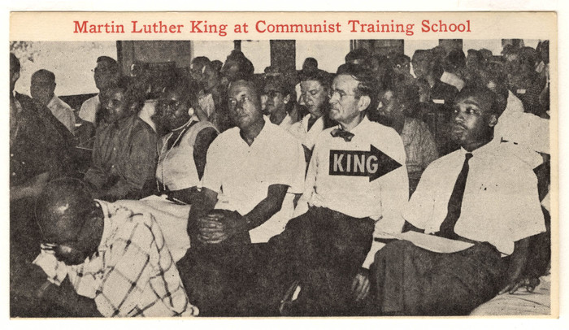

Martin Luther King was a fake Black leader who worked to manifest the Jewish agenda of Communism. He was part of the Jewish Frankfurt School; the school that worked to communize America and bring humanity under Jewish control of enslaving the Gentiles (non-Jews)

*Old photo of Marthin Luther King, 1957*
Martin Luther King was trained at the Frankfurt communist school in Tennessee and was a paid agent:
"King was photographed in 1957 at the Highlander Folk School, a communist training school in Tennessee, with (Jew)Abner Berry who held a post on the Central Committee of the Communist Party. The Joint Legislative Committee on Un-American Activities reported that his Southern Christian Leadership Conference was "substantially under the control of the Communist Party through the influence of the Southern Conference Educational Fund and the communists who manage it."
King had connections with over 60 communist front organizations. Nine of his closest aides were high-ranking communist activists and one of those later became an aide to Rev. Jesse Jackson.
Stanley Levison, who had been a King advisor since 1956, had been involved with the Communist Party up to 1955 and brought other known communists onto King's staff."
Karl Prussion, an FBI agent who infiltrated the Communist Party and for five years attended meetings in California, testified in 1963:
"I further swear and attest that at each and everyone of the aforementioned meetings, one Reverend Martin Luther King was always set forth as the individual to whom Communists should look and rally around in the Communist struggle on many racial issues."
Julia Brown, a former Communist, said:
"We were told to promote Martin Luther King to unite Negroes and also Whites behind him ... He was taking directions from Communists. I know for a fact the Communists would never have promoted him, financed him, and supported him if they couldn't trust him. I am certain as I can be that he knew what he was doing."
Although a 1977 court order sealed the FBI's extensive surveillance records on King in the National Archives for 50 years, a book by Sen. Jesse Helms in 1998 called "The King Holiday and Its Meaning" said that Charles D. Brennan, an Assistant Director of the FBI who was personally involved in the surveillance, characterized his activities as "orgiastic and adulterous escapades" in which he could be "bestial in his sexual abuse of women." He also observed that "King frequently drank to excess."
King's famous dream speech was in fact written by his Jewish handler the same Jew Levinson who was the head of the America Communist Party in the 1950's and is full of lies and historical perjuries. Its a document that attempts to communize the memories of the Leaders and Founders of American named within. Its the Jewish big lie in action.
As Dr.Duke wrote in his book "My Awakening"
on the subject:
Stanley Levinson, who wrote many of King's speeches, including, some say, the "I Have a Dream" speech delivered at the March on Washington....
King privately declared himself to be a
Marxist, and told his inner circle that his efforts were a part of the
"class struggle." His personal secretary, Bayard Rustin, was a
Communist. When King had to replace Rustin in 1961, he chose another
Communist, Jack O'Dell. His main advisor ("handler" would probably be a
more apt term), as I've mentioned, was Jewish Communist Stanley
Levinson, who edited and probably wrote a good deal of King's book
Stride Toward Freedom. Levinson prepared King's income tax returns,
controlled King's fundraising activities, and was also in charge of
funneling Soviet money to the Communist Party, USA.[15]
Nothing new under the sun there:
"In 1925, a dozen blacks were recruited for propaganda training in Russia. That same year, the American Negro Labor Congress was established. In 1930, they changed their name to the League of Struggle for Negro Rights. They merged with the United Negro Congress when it was founded in 1936 in Washington, D.C. By 1940, communists made up two-thirds of its membership. In 1947, they united with the Civil Rights Congress, a communist front group."
Remember King was promoted as an agent of racial integration thus promotion of racial mixing and destruction of the two Gentile races, which is part of the Jewish Globalist Agenda. Where Blacks who promoted racial separation where attacked by the Jews...